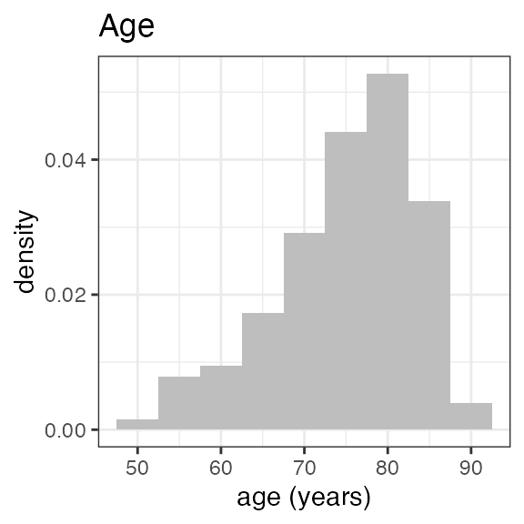
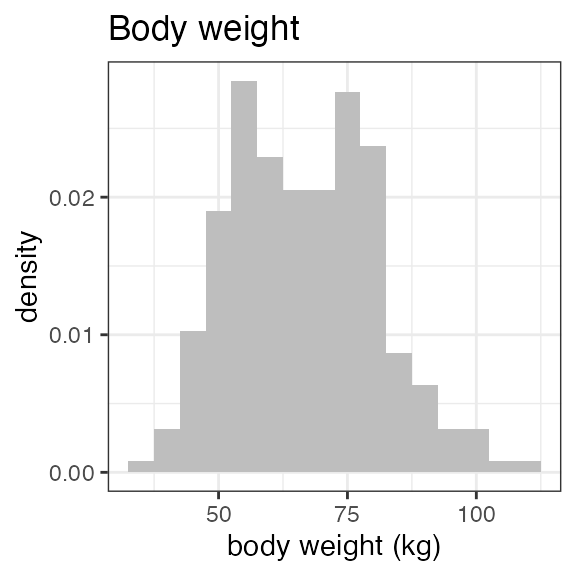
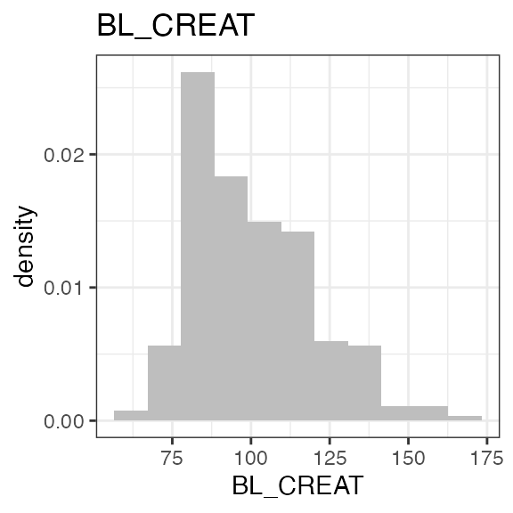
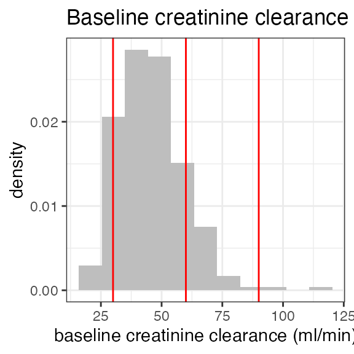
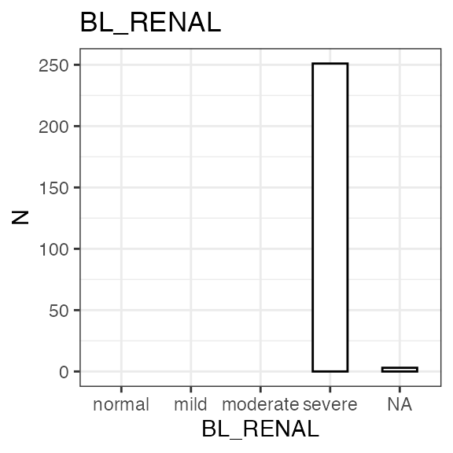
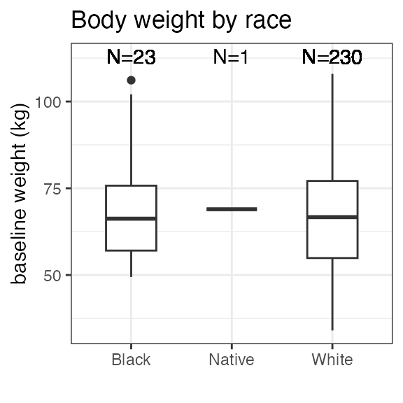
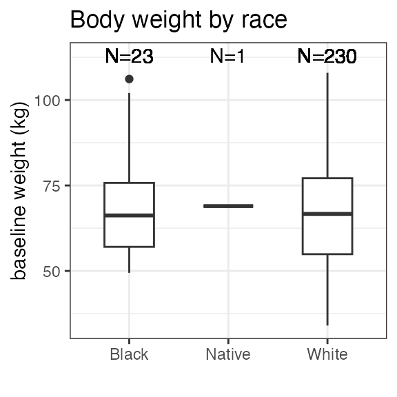
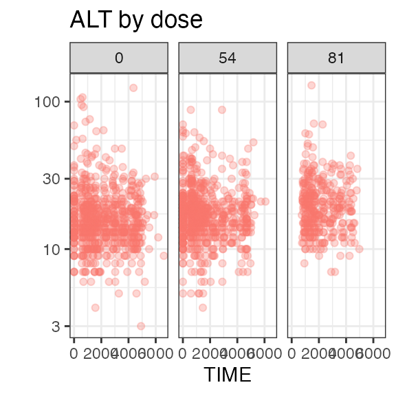
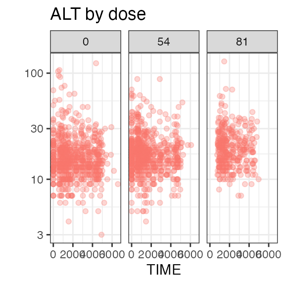
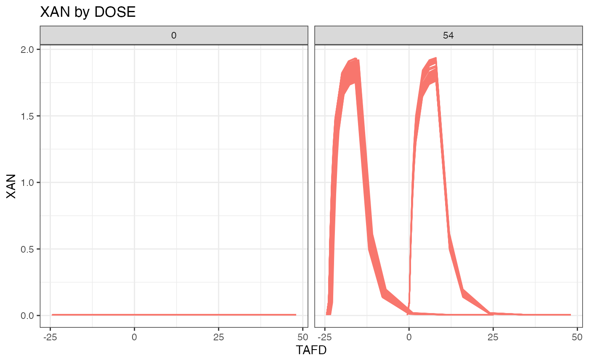

SDTM DATA
CDISCPILOT01
# source: https://github.com/pharmaverse/pharmaversesdtm
sdtm <- sdtm(
list(
dm = pharmaversesdtm::dm,
ex = pharmaversesdtm::ex,
vs = pharmaversesdtm::vs,
pc = pharmaversesdtm::pc,
lb = pharmaversesdtm::lb,
ts = pharmaversesdtm::ts,
eg = pharmaversesdtm::eg,
ae = pharmaversesdtm::ae
)
)
summary(sdtm)
#> -------- SDTM data set summary --------
#> Study CDISCPILOT01
#>
#> Safety and Efficacy of the Xanomeline Transdermal Therapeutic System (TTS) in
#> Patients with Mild to Moderate Alzheimers Disease.
#>
#> Data disposition
#> DOMAIN SUBJECTS OBSERVATIONS
#> dm 306 306
#> ex 254 591
#> vs 254 29643
#> pc 254 4572
#> lb 254 59580
#> ts 0 0
#> eg 254 26717
#> ae 225 1191
#>
#> Arms (DM):
#> ACTARMCD ACTARM
#> Pbo Placebo
#> Scrnfail Screen Failure
#> Xan_Hi Xanomeline High Dose
#> Xan_Lo Xanomeline Low Dose
#>
#> Treatments (EX):
#> PLACEBO, XANOMELINE
#>
#> PK sample specimens (PC):
#> PLASMA, URINE
#>
#> PK analytes (PC):
#> PCTEST PCTESTCD
#> XANOMELINE XAN
#>
#> Hash: 017bf42677d51bf947d39d78d393dd10
#> Last DTC: 2015-03-05 15:40:00
plot(sdtm, domain = "dm", points = F)NONMEM INPUT FORMAT DATA
nif_option(silent = TRUE)
nif <- nif() |>
add_administration(sdtm, 'XANOMELINE', analyte = "XAN") |>
add_administration(sdtm, 'PLACEBO') |>
add_observation(sdtm, 'pc', 'XAN', observation_filter = "PCSPEC == 'PLASMA'") |>
add_observation(sdtm, 'lb', 'ALT', ntime_method = "DY") |>
add_baseline(sdtm, "lb", "CREAT") |>
add_bl_renal(molar = TRUE) |>
derive_cfb() |>
add_dose_level()
summary(nif)
#> ----- NONMEM Input Format (NIF) data summary -----
#> Data from 254 subjects across one study:
#> STUDYID N
#> CDISCPILOT01 254
#>
#> Sex distribution:
#> SEX N percent
#> male 111 43.7
#> female 143 56.3
#>
#> Renal impairment class:
#> CLASS N percent
#> normal 4 1.6
#> mild 58 22.8
#> moderate 173 68.1
#> severe 16 6.3
#> NA 3 1.2
#>
#> Treatments:
#> PLACEBO, XAN
#>
#> Analytes:
#> ALT, XAN
#>
#> Subjects per dose level:
#> PLACEBO XAN N
#> 0 0 86
#> 0 54 168
#>
#> 5370 observations:
#> CMT ANALYTE N
#> 2 XAN 3556
#> 3 ALT 1814
#>
#> Observations by NTIME:
#> NTIME ALT XAN
#> -2448 1 -
#> -2184 1 -
#> -1920 1 -
#> -1896 1 -
#> -1584 1 -
#> -1560 1 -
#> -1536 1 -
#> -1248 1 -
#> -1200 1 -
#> -1056 1 -
#> (202 more rows)
#>
#> Subjects with dose reductions
#> PLACEBO XAN
#> 0 0
#>
#> Treatment duration overview:
#> PARENT min max mean median
#> PLACEBO 7 210 149.1 182
#> XAN 1 212 99.2 81
#>
#> Hash: ce313bc9b472b0b8e917d95828b18735
#> Last DTC: 2015-03-05 14:40:00
invisible(capture.output(
plot(summary(nif))
)) 
 

Data definition table
| name | definition | type | description | unit | source |
|---|---|---|---|---|---|
| REF | Consecutive record number | integer | Unique number for each row | NA | Produced |
| STUDYID | Study | character | Study identification number | NA | DM: STUDYID |
| ID | Subject identifier | numeric | Unique subject ID across all studies | NA | Produced |
| USUBJID | USUBJID in source | character | Unique subject ID in study | NA | DM: USUBJID |
| AGE | Age | numeric | Age of subjec at study start | years | DM: AGE or derived from DM: BRTHDTC |
| SEX | Sex | 0, 1 | 0 = Male, 1 = Female | NA | Derived from DM: SEX |
| RACE | Race | character | Race category | NA | DM: RACE |
| WEIGHT | Body weight | numeric | Baseline body weight | kg | VS: VSTESTCD = WEIGHT |
| DTC | Datetime | datetime | Date and time of event | Datetime | SDTM domain |
| TIME | Time since start of treatment | numeric | Individual time since individual start of treatment | hours | DTC |
| NTIME | Nominal time | numeric | Nominal time of event | hours | SDTM domain |
| TAFD | Time after first dose | numeric | Actual time after individual first dose | hours | TIME |
| TAD | Time after last dose | numeric | Time after individual last dose | hours | TIME |
| EVID | Event ID | 0, 1 | 0 = Observation, 1 = Administration | NA | Produced |
| AMT | Amount | numeric | Dose administered | mg | EX: EXDOSE |
| ANALYTE | Analyte | character | Assigned name to observation substrate | NA | EXTRT, xxTESTCD or assigned |
| CMT | Compartment | 1, 1, 2, 3 | 1 = PLACEBO administration, 1 = XAN administration, 2 = XAN observation, 3 = ALT observation | NA | Produced or assigned |
| PARENT | Parent analyte | character | Reference drug name for observations | NA | Automatically or manually assigned |
| METABOLITE | Metabolite | logical | Metabolite flag | NA | Automatically or manually assigned |
| DOSE | Dose | numeric | Last administerd dose | mg | EX: EXDOSE |
| DV | Dependent variable | numeric | Dependent variable, NA for administrations | NA | SDTM domain |
| MDV | Missing DV | numeric | 0 = non-missing DV, 1 = Missing DV | NA | Produced |
| IMPUTATION | Imputation | character | time imputation applied to record | NA | Produced |
| ACTARMCD | Actual arm code | character | ACTARMCD as in SDTM source | NA | DM: ACTARMCD |
| TRTDY | Treatment day | numeric | Day after treatment start | NA | SDTM domain |
| BL_CREAT | Baseline creatinine | numeric | Serum creatinine value at baseline | umol/l | LB |
| BL_CRCL | Baseline creatinnine clearance | numeric | Creatinine clearance based on baseline serum creatinine | ml/min | LB, DM |
| BL_RENAL | Baseline renal function class | normal, mild, moderate, severe | Renal function category at baseline, based on BL_CRCL | NA | Derived from BL_CRCL |
| DVBL | Baseline value for dependent variable | numeric | DV value at baseline | NA | SDTM domain |
| DVCFB | Change from baseline of dependent variable | numeric | DV difference to DVBL | NA | Derived from DV, DVBL |
| DL | Dose level | numeric | Dose at treatment start | mg | Derived from DOSE |
DATA EXPLORATION
Pharmacokinetics
plot(nif, "XAN")
#> `geom_line()`: Each group consists of only one observation.
#> ℹ Do you need to adjust the group aesthetic?